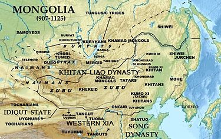

Mongol Empire

Howdy Partner
The Mongol Empire of the 13th and 14th centuries was the largest contiguous land empire in history.[2] Originating in Mongolia in East Asia, the Mongol Empire eventually stretched from Eastern Europe and parts of Central Europe to the Sea of Japan, extending northward into parts of the Arctic;[3] eastward and southward into the Indian subcontinent, Mainland Southeast Asia and the Iranian Plateau; and westward as far as the Levant and the Carpathian Mountains.
The Mongol Empire emerged from the unification of several nomadic tribes in the Mongol homeland under the leadership of Genghis Khan (c. 1162–1227), whom a council proclaimed as the ruler of all Mongols in 1206. The empire grew rapidly under his rule and that of his descendants, who sent out invading armies in every direction.[4][5] The vast transcontinental empire connected the East with the West, the Pacific to the Mediterranean, in an enforced Pax Mongolica, allowing the dissemination and exchange of trade, technologies, commodities and ideologies across Eurasia.[6][7] The empire began to split due to wars over succession, as the grandchildren of Genghis Khan disputed whether the royal line should follow from his son and initial heir Ögedei or from one of his other sons, such as Tolui, Chagatai, or Jochi. The Toluids prevailed after a bloody purge of Ögedeid and Chagataid factions, but disputes continued among the descendants of Tolui. A key reason for the split was the dispute over whether the Mongol Empire would become a sedentary, cosmopolitan empire, or would stay true to the Mongol nomadic and steppe-based lifestyle. After Möngke Khan died (1259), rival kurultai councils simultaneously elected different successors, the brothers Ariq Böke and Kublai Khan, who fought each other in the Toluid Civil War (1260–1264) and also dealt with challenges from the descendants of other sons of Genghis.[8][9] Kublai successfully took power, but civil war ensued as he sought unsuccessfully to regain control of the Chagatayid and Ögedeid families.
Name
What is referred to in English as the Mongol Empire was called the ᠶᠡᠬᠡ ᠮᠣᠩᠭᠣᠯ ᠤᠯᠤᠰ Ikh Mongol Uls (ikh: "great", uls: "state"; Great Mongolian State).[13][14] In the 1240s, one of Genghis's descendants, Güyük Khan, wrote a letter to Pope Innocent IV which used the preamble "Dalai (great/oceanic) Khagan of the great Mongolian state (ulus)".[15] After the succession war between Kublai Khan and his brother Ariq Böke, Ariq limited Kublai's power to the eastern part of the empire. Kublai officially issued an imperial edict on 18 December 1271 to name the country Great Yuan (Dai Yuan, or Dai Ön Ulus) to establish the Yuan dynasty. Some sources state that the full Mongolian name was Dai Ön Yehe Monggul Ulus.[16]
History
Pre-empire context
The area around Mongolia, Manchuria, and parts of North China had been controlled by the Liao dynasty since the 10th century. In 1125, the Jin dynasty founded by the Jurchens overthrew the Liao dynasty and attempted to gain control over former Liao territory in Mongolia. In the 1130s the Jin dynasty rulers, known as the Golden Kings, successfully resisted the Khamag Mongol confederation, ruled at the time by Khabul Khan, great-grandfather of Genghis Khan.[17] The Mongolian plateau was occupied mainly by five powerful tribal confederations (khanlig): Keraites, Khamag Mongol, Naiman, Mergid, and Tatar. The Jin emperors, following a policy of divide and rule, encouraged disputes among the tribes, especially between the Tatars and the Mongols, in order to keep the nomadic tribes distracted by their own battles and thereby away from the Jin. Khabul's successor was Ambaghai Khan, who was betrayed by the Tatars, handed over to the Jurchen, and executed. The Mongols retaliated by raiding the frontier, resulting in a failed Jurchen counter-attack in 1143.[17] In 1147, the Jin somewhat changed their policy, signing a peace treaty with the Mongols and withdrawing from a score of forts. The Mongols then resumed attacks on the Tatars to avenge the death of their late khan, opening a long period of active hostilities. The Jin and Tatar armies defeated the Mongols in 1161.[17] During the rise of the Mongol Empire in the 13th century, the usually cold, parched steppes of Central Asia enjoyed their mildest, wettest conditions in more than a millennium. It is thought that this resulted in a rapid increase in the number of war horses and other livestock, which significantly enhanced Mongol military strength.[18]
See Also
- Some cool Stuff
- Mongol Cuisine
- Mongol Art
- Mongol
- Mainly Copy Feature
- Testing Copy Feature &
- Testing Copy Feature